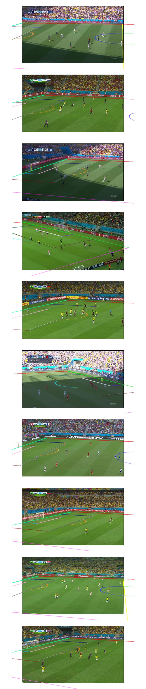
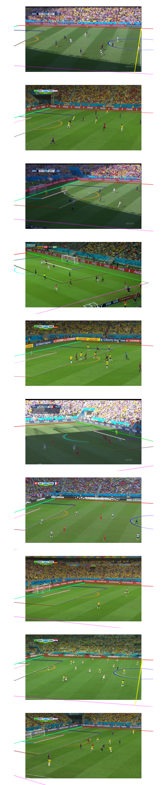

TVCalib: Camera Calibration for Sports Field Registration in Soccer
Jonas Theiner and Ralph Ewerth

$$\hat \phi=\{FoV=41.9°, \mathbf{t}=[-0.1\,m, 60.7\,m, -21.2\,m], pan=14.3°, tilt=61.9°, roll=-0.1°\}\quad \hat \psi=\{k_1=0.198, k_2=0.056\}$$
Abstract
Sports field registration in broadcast videos is typically interpreted as the task of homography estimation, which provides a mapping between a planar field and the corresponding visible area of the image. In contrast to previous approaches, we consider the task as a camera calibration problem.
First, we introduce a differentiable objective function that is able to learn the camera pose and focal length from segment correspondences (e.g., lines, point clouds), based on pixel-level annotations for segments of a known calibration object, i.e., the sports field. The calibration module iteratively minimizes the segment reprojection error induced by the estimated camera parameters \(\phi\) and potential lens distortion coefficients \(\psi\).
Second, we propose a novel approach for 3D sports field registration from broadcast soccer images. Compared to the typical solution, which subsequently refines an initial estimation, our solution does it in one step.
The proposed method is evaluated for sports field registration on two datasets and achieves superior results compared to two state-of-the-art approaches.
News
| Aug 30, 2022 | Preprint is available as well as source code to reproduce results. |
|---|---|
| Jul 16, 2022 | The resulting paper is accepted for publication at WACV’23. |
| Jun 10, 2022 | Our method reaches the 2nd place at the SoccerNet-Calibration Challenge which was hosted at the CVSports’22. |

System Overview

Our proposed framework for 3D sports field registration: (1) Segment localization performs instance segmentation and selects appropriate points with respective label from a known calibration object (3D model), and (2) our main contribution, the calibration module, which predicts camera parameters by iteratively minimizing the segment reprojection loss.
Reproducibility
Source Code available on Github
Additional Annotations for WC14-test
We provide annotations on this benchmark dataset to measure the image reprojection error (via ACC@t) for 3D sports field registration: wc14-test-additional_annotations_wacv23_theiner.tar
Results on SoccerNet-Calibration-test
Reprojection metric: Since no ground-truth camera parameters or homography matrices are available, the reprojection performance is evaluated in pixel space via Acc@t. The accuracy for segments of the reprojected sports field according to the estimated parameters is computed based on annotated pixels for each visible segment in the image.
| Calibration | Segmentation | AC@5 | AC@10 | AC@20 | Completeness Rate |
|---|---|---|---|---|---|
| Evaluating the Camera Calibration | |||||
| TVCalib Vanilla | GT | 65.3 | 84.2 | 92.6 | 100.0 |
| TVCalib(\(\tau\)) | GT | 68.7 | 88.0 | 96.1 | 92.8 |
| HDecomp + Chen & Little (\(\mathcal{U}_{FoV}+\mathcal{U}_{xyz}\)) | GT | 53.7 | 77.5 | 88.4 | 80.3 |
| Evaluating the Homography | |||||
| TVCalib Vanilla | GT | 61.7 | 81.6 | 92.0 | 100.0 |
| Chen & Little (\(\mathcal{U}_{FoV}+\mathcal{U}_{xyz}\)) | GT | 57.3 | 76.0 | 83.7 | 100.0 |
| TVCalib(\(\tau\)) | GT | 65.0 | 84.4 | 95.6 | 92.8 |
| HDecomp + Chen & Little (\(\mathcal{U}_{FoV}+\mathcal{U}_{xyz}\)) | GT | 61.1 | 81.2 | 89.4 | 80.3 |
Results on WorldCup 2014 (WC14) [Homayounfar et al. CVPR'17]
Projection metric via \(IoU_{part}\): Measures the binary intersection over union of the projected templates from a predicted and a ground-truth homography \(\mathbf{H}\) for the visible area of the sports field (evaluation in world space).
\(\mathbf{H}\): Officially provided (manually annotated) homography matrices from WC14 (Homayounfar et al. CVPR'17) that are used to evaluate the \(IoU\) metric. Based on its reprojection performance and inspection of qualitative examples these matrices do not represent ground-truth.
| Calibration | Segmentation | AC@5 | AC@10 | AC@20 | Completeness Rate | \(IoU_{part}\) mean | \(IoU_{part}\) median |
|---|---|---|---|---|---|---|---|
| Evaluating the Homography | |||||||
| TVCalib Vanilla | GT | 62.7 | 84.9 | 95.5 | 100. | 96.1 | 97.1 |
| Chen & Little (reproduced) | GT | 61.2 | 82.4 | 90.6 | 100. | 95.2 | 97.3 |
| \(\mathbf{H}\) | 54.1 | 82.9 | 92.4 | 100. | 100.0 | 100.0 | |
| TVCalib Vanilla | Pred | 38.8 | 69.1 | 89.4 | 100. | 95.3 | 96.6 |
| Chen & Little (CVPR'19) (reproduced) | Chen & Little | 35.8 | 66.3 | 84.4 | 100. | 94.6 | 96.3 |
| Jiang et al. (WACV'20) (reproduced) | Jiang et al. | 36.9 | 62.9 | 81.5 | 100. | 95.2 | 97.1 |
| Sha et al. (CVPR'20) | Sha et al. | 100. | 93.2 | 96.1 | |||
| Shi et al. (WACV'22) | Shi et al. | 100. | 96.6 | 97.8 | |||
| Chu et al. (CVPRW'22) | Chu et al. | 100. | 96.0 | 97.0 | |||
Qualitative Examples on WC14
We compare the reprojection induced by the predicted camera parameters of our method to the reprojection from the homography estimation from Jiang et al. (WACV'20), Chen & Little (CVPRW'19), and officially provided homography matrices from WC14 (Homayounfar et al. CVPR'17).
| TVCalib Vanilla Segmentation: Predicted Segments | \(\mathbf{\hat H}\)(Jiang et al.) | \(\mathbf{\hat H}\)(Chen & Little) | \(\mathbf{H}\) |
|---|---|---|---|
|  |  |